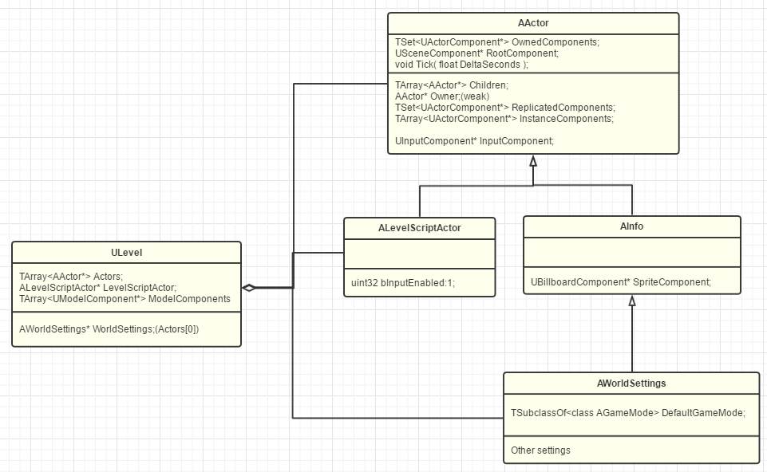

GamePlay架构(2)：Level和World
上文谈到Actor和Component的关系，UE利用Actor的概念组成一片游戏对象森林，并利用Component组装扩展Actor的能力，让世界里拥有了形形色色的Actor们，拥有了自由表达3D世界的能力。
那么，这些Actor们，到底是怎么组织起来的呢？
不同的游戏引擎们，看待这个过程的角度和理念也不一样。Cocos2dx会认为游戏世界是由Scene组成的，Scene再由一个个Layer层叠表现，然后再有一个Director来导演整个游戏。Unity觉得世界也是由Scene组成的，然后一个Application来扮演上帝来LoadLevel，后来换成了SceneManager。其他的，有的会称为关卡（Level）或地图（map）等等。而UE中把这种拆分叫做关卡（Level），由一个或多个Level组成一个World。
Level
在UE的世界中，我们之前已经有了空气（C++）,土壤（UObject），物件（Actor）。而现在UE又施展神力创建了一片片大陆（Level），在这片大陆上（.map文件），Actor们秩序井然，各种地形拔地而起，植被繁茂，天空雾云缭绕，圣光普照，这也是玩家们降生开始精彩冒险的地方。

可以从ULevel的前缀U看出来Level（大陆）也确实是继承于UObject（土壤）的。那既然同属于Object下面的各Actor们都拥有了一定的智能能力（支持蓝图脚本），Level自然也得体现出大地的意志，所以默认带了一个土地公（ALevelScriptActor），允许我们在关卡里编写脚本，可以对本关卡里的所有Actor通过名字呼之则来，关卡蓝图实际上就代表着该片大陆上的运行规则。
在Level已经有了管理者之后，一开始大家都挺满意，但渐渐的就发现，好像各个Level需要的功能好像都差不多，都是修改一下光照，物理等一些属性。所以为了方便起见，UE便给每一个Level也都默认配了一个书记官（Info），他一一记录着本Level的各种规则属性，在UE需要的时候便负责相告。更重要的是，在Level需要有其他管理人员一起协助的时候，他也记录着"游戏模式"的名字来让UE可以指派。
前面我们说过，有一些Actor是不"显示"的（没有SceneComponent），是不能"摆放"到Level里的，但是它依然可以在关卡里出力。其中一个家族系列就是AInfo和其之类。今天我们只简单介绍一下跟Level直接相关的一位书记官：AWorldSettings。

ALevelScriptActor作为一个特化的Actor,却把Components列表界面给隐藏了，说明UE其实是不希望我们去复杂化关卡构成的。
从游戏逻辑的组织上来说，Level其实更应该表现为一个Actor的容器。UE其实也是不鼓励在Level里编写太复杂的逻辑的。所以才接着会有了之后的GameMode,Controller那些真正的逻辑控制类（后续会再细讨论）。
World
一个World可以包含多个Level。UE里每个World支持一个PersistentLevel和多个其他Level。Persistent的意思是一开始就加载进World，Streaming是后续动态加载的意思。
World的Settings也是以PersistentLevel为主的。
World-Level-Actor 三层架构：

总结
Level作为Actor的容器，同时也划分了World，一方面支持了Level的动态加载，另一方面也允许了团队的实时协作，大家可以同时并行编辑不同的Level。一般而言，一个玩家从游戏开始到结束，UE会创造一个GameWorld给玩家并一直存在。玩家切换场景或关卡，也只是在这个World中加载释放不同的Level。